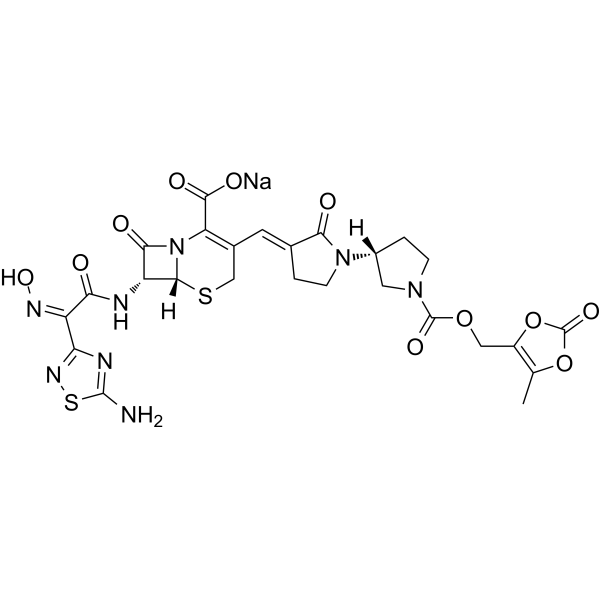
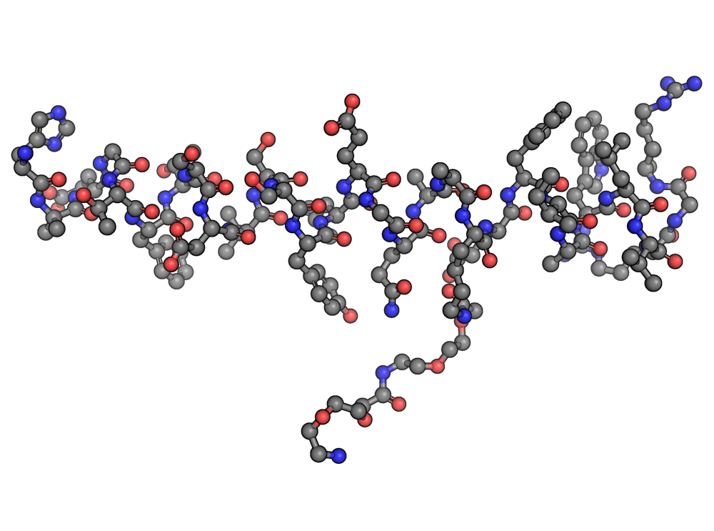
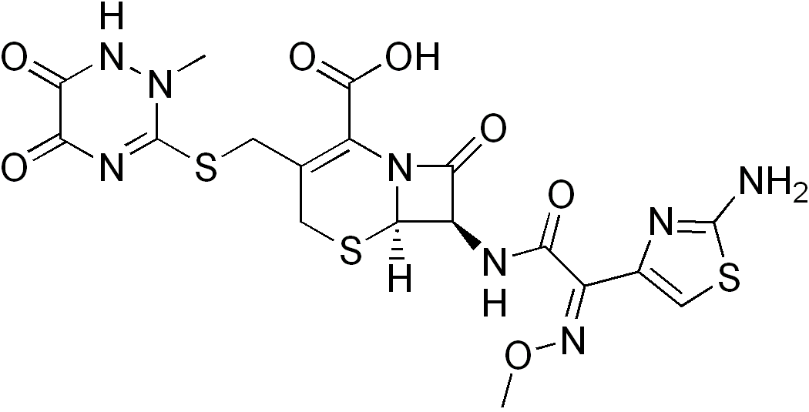
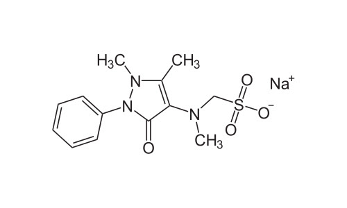

Laboratorio Rossetto
30 años de compromiso con la salud
Desarrollos
Comprometidos con la salud, nuestro laboratorio se encuentra arduamente trabajando para continuar en la vanguardia en lo que a nuevos tratamientos refiere. Por ello podemos transmitir orgullosamente los nuevos desarrollos en los que nos encontramos trabajando de cara al año 2025. Entre ellos podemos nombrar:
Ceftobiprol medocaril sódico
Ceftobiprol medocaril sódico es una cefalosporina de quinta generación con actividad bactericida. Su mecanismo de acción se basa en la inhibición de la síntesis de la pared celular bacteriana, un proceso esencial para la supervivencia de las bacterias. Actúa uniéndose a las proteínas fijadoras de penicilinas, que son enzimas clave en la formación de la pared celular bacteriana.
Lo que distingue a ceftobiprol es su afinidad por las PBP2a y PBP2x, las cuales están asociadas con la resistencia en bacterias grampositivas como Staphylococcus aureus resistente a meticilina (MRSA) y Streptococcus pneumoniae resistente a penicilina, respectivamente. Al inhibir estas proteínas, ceftobiprol logra destruir bacterias resistentes a muchos otros antibióticos, incluyendo las cefalosporinas tradicionales y los betalactámicos más antiguos.
Semaglutida
La semaglutida es un medicamento que actúa como un agonista del receptor de GLP-1 (glucagon-like peptide-1). Este mecanismo tiene varios efectos en el cuerpo que ayudan a controlar los niveles de glucosa en sangre y pueden ser útiles en el tratamiento de la diabetes tipo 2 y la obesidad.
Ceftriaxona
El anillo betalactámico es parte de la estructura de las cefalosporinas, por lo tanto, la ceftriaxona es un antibiótico betalactámico. El modo de acción de estos antibióticos es la inhibición de la síntesis de la pared celular de las bacterias, específicamente por unión a unas proteínas bacterianas llamadas "proteínas ligandos de la penicilina (PBPs).
Cefepime
Su espectro de acción es similar al de las cefalosporinas de tercera generación, con propiedades bactericidas sobre microorganismos grampositivos, gramnegativos y enterobacteriáceas, como Streptococcus pneumoniae, Pseudomonas aeruginosa, Staphylococcus aureus, Enterobacter cloacae, Enterobacter aerogenes, Citrobacter freundii, Providencia, Serratia, Morganella.
El mecanismo de acción consiste en inhibir la síntesis de la pared celular bacteriana, a la que se une por su alta afinidad con las PBP 3 (proteínas ligadoras de penicilina). Muestra más actividad frente a cocos grampositivos. Mientras otras cefalosporinas son degradadas por diversas betalactamasas mediadas por plásmidos y cromosomas, esto no sucede con la cefepima. Ésta resulta efectiva sobre cepas productoras de betalactamasas como Enterobacteriaceae, responsables de sepsis graves, resistentes a los antibióticos tradicionales.
Ondansetron
El ondansetrón es un antiemético que pertenece al grupo de los antagonistas selectivos de los receptores de serotonina 5-HT₃. Su principal función es prevenir y tratar las náuseas y vómitos inducidos por quimioterapia, radioterapia y postoperatorios.
Dipirona
La dipirona (también conocida como metamizol) es un analgésico, antipirético y espasmolítico. Se utiliza principalmente para el tratamiento del dolor moderado a severo y la fiebre alta que no responde a otros antipiréticos.
Mecanismo de acción
Inhibición de la síntesis de prostaglandinas
- La dipirona actúa inhibiendo la enzima ciclooxigenasa (COX-1 y COX-2), reduciendo la producción de prostaglandinas, sustancias que median el dolor, la fiebre y la inflamación.
Acción sobre el sistema nervioso central (SNC)
- Actúa en el sistema nervioso central modulando la transmisión del dolor en la médula espinal y el cerebro.
Efecto antipirético
- Actúa a nivel del hipotálamo, inhibiendo la producción de prostaglandinas en el centro termorregulador, lo que ayuda a reducir la fiebre.
Efecto espasmolítico
- Relaja los músculos lisos de órganos como el tracto gastrointestinal y el sistema urinario, ayudando en casos de cólicos renales o biliares.